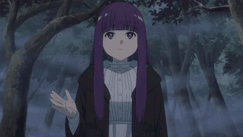
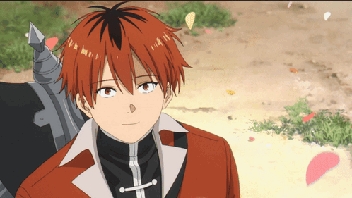
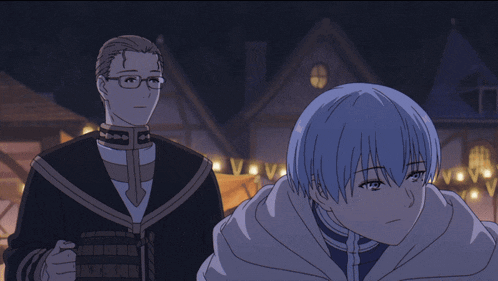
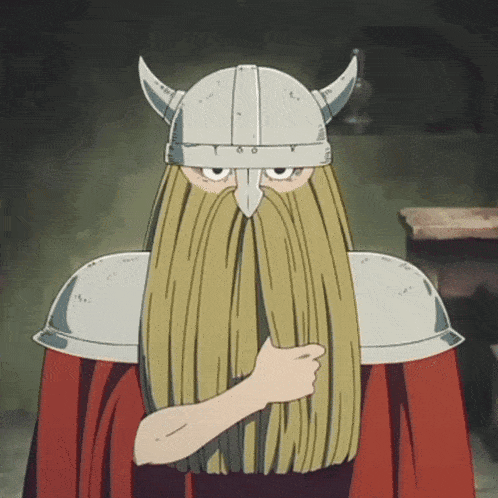

Frieren
Una elfa maga de longevidad extraordinaria. Tras la derrota del Rey
Demonio, Frieren reflexiona sobre el tiempo y la memoria humana y
emprende un viaje para comprender mejor a quienes la acompañaron.
Seiyuu: Atsumi Tanezaki
Descargar imagen

Fern
Aprendiz de Frieren, curiosa y decidida. Acompaña a Frieren en su
viaje para aprender sobre magia y sobre la fragilidad de la vida
humana.
Seiyuu:Kana Ichinose
Descargar imagen

Stark
Joven guerrero que acompaña a Frieren y Fern. Valiente y con gran
sentido del deber, aporta energía y humanidad al grupo.
Seiyuu:Chiaki Kobayashi
Descargar imagen

Himmel
Héroe legendario y antiguo compañero de Frieren. Su vida y muerte
marcan el punto de partida del viaje emocional de Frieren.
Seiyuu: Nobuhiko Okamoto
Descargar imagen

Heiter
Monje y antiguo conocido de Frieren; aparece en varias entradas como
figura que ofrece enseñanzas y recuerdos del pasado del grupo.
Seiyuu: Hiroki Tochi
Descargar imagen

Eisen
Eisen es un enano y el antiguo guerrero del grupo de héroes que
derrotó al Rey Demonio, formado por él junto a Frieren, Himmel y
Heiter. Como enano, tiene una esperanza de vida mucho mayor que la de
la mayoría de los humanos, pero menor que la de los elfos.
Seiyuu: Yoji Ueda
Descargar imagen